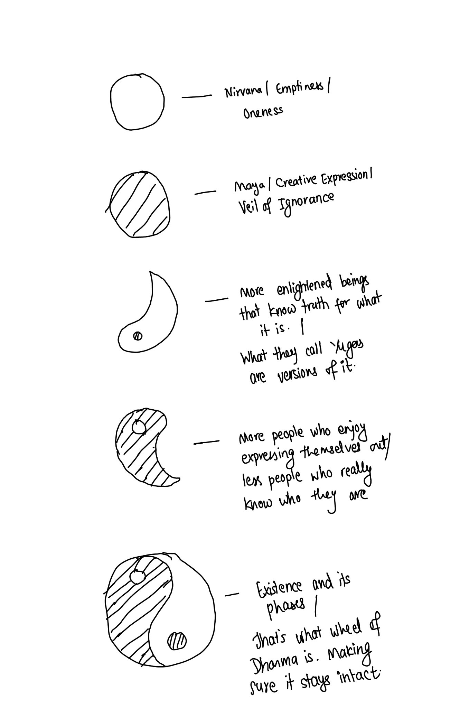

9 minutes
2024 in a nutshell
I started this year differently compared to years before. In the year’s end, I saw who I could become, who I was and got some glimpse into what 2024 was going to be about. Really got energized already at the start.
2023 was speeding with insights. Its been a slow year compared to 2023 because everything was about calming down. We built a home for ourselves. I realized having a home that you design and build yourself based on how you want it to look like and make you feel, is a great blessing. Its been one wholesome journey to build my home.
Completed watching One Piece this year. The theme, the friendship, the adventure all really engulfed me to feel like I am one of them. Such a joy. This year I watched two more animes: Jujitsu Kaizen ( Fight scenes were animated so good that I enjoyed fight scenes for the very first time in movies/animes ), and Demon Slayer ( Enjoyed watching it but nothing very specific to say about it).
In the process, one instance where I over-analyzed One Piece awakening to enlightenment and creation:
One question I had for a long time was whether I wanted enlightenment or creation. That answer came today. Enlightenment is like having infinite observation haki as well as zoan type devil fruit that has will of it’s own. Once its awakened, its will is yours and yours is its will. So, the way I am going to balance is similar to how devil fruits awakening gets balanced. You don’t always awaken it but only when needed. That way you can have it your way. – 2024-02-17
Who knows, maybe I will have my way. Its a contradiction in itself and nothing really comes out of pondering on it. If it happens, I will know. Until it happens, its a play of my mind. Taking rest right there. 😁
Next thing I got this year is understanding of role of Divine Feminine in all of creation and enlightenment. It was always clear to me about the creative aspect of it but I hadn’t gone very deep into it. The more I have learned of divine feminine and her presence in my life, I have been more clear and clear about what I need. I realized I was getting everything I need without even asking for it. Its happening step by step weirdly, and I am excited to see on which note 2025 ends in.
While saying this, its really essential to understand the difference between not acting at all vs acting without tying yourself to the fruits of it. I have always wanted to be autotelic and in that process, there is no place for thought about outcome while at it. I enjoy it, and that’s the outcome. I do plan, I do act accordingly. I use my cognitive ability to come up with improved solutions, but I don’t tie myself to any act or its output. This is the basics of “Karma Yog” of Bhagvad Geeta. You will always know what you need to do and do it. If you know you aren’t doing something to avoid boredom, that’s enough information to know. Rest will fall in place.
There have been pointers that have blown my mind this year. I don’t know if they are real or not, but I know if they are real, they demand my 100 percent on it. 2025 will be about verifying those pointers as well. It will end in either of two ways I will live my life. I have one of these two ways to live my life:
- Live a life of a monk. Accepting everything as is and not really owning anything. Knowing its all ephemeral and will end.
- Live a life of a king. Knowing that everything is yours but if everything is yours, there is nothing that you need to possess because its already yours.
A drawing of what creation/enlightenment seems to be explained like: 
2025 will decide what life I am going to live. Therefore for 2025, I have set my theme color as purple/violet ( the color of the sahasrara ) 🟣🔮🟪 .
This year, for the first time in my life, I visited museums and art galleries. I used to read about art, renaissance, history but never put in time to just enjoy these in real life. I moved from one place to another multiple times finally ending my stay in the valley temporarily after 11 years, starting a new phase.
I always try to read a decent number of books. I don’t decide which books I read. I put a lot of books on my boox device and just let the mood decide which I read/complete. Timing chooses books. Some get completed, some don’t. Sometimes I just reading 20% of a book and move to the next. Sometimes, I come back to it again and again, only to read few pages and move to the next. But overall, reading has been one of my favorite pastimes. A big credit of who I am today is to the books that have found me. Hope amazing books find you too in 2025.
Books re-read
- The Creative Act : A way of Being by Rick Rubin ( This book is such a masterpiece of creating art. I think it will be valuable as people will try to find identity in a world where AI will start doing most of the tasks that we have been doing. )
- Facebook’s Little Red Book ( This is such a clear book of theme, vision and why values matter. Inspiration always wins. Each page is a beauty. I need a physical copy now. )
Completed This year
- Breath: The New Science of a Lost Art ( The activity that we do the most frequent in our lives needed to be at least understood. Though I haven’t deeply pursued each findings present in the book, I understand not to breath via mouth except for relaxation. And I agree that increasing VO2 max (a.k.a. lung capacity) is a good indicator for overall longevity. )
- The Root Stanzas of the Middle Way: The Mulamadhyamkarika by Nagarjuna ( This is a masterpiece of Mahayana Tradition of Buddhism. It took some time to go into details and understand it but the philosophical treatise is something that will keep me pondering over and over. Really good guide on what exactly is emptiness. Its contradictions seem ironical, but if you have experienced something along the way, it fits right in the middle like the title suggests. )
- Pride and Prejudice ( First fiction I read this year. Its always refreshing to read books that have happy ending. LOL 🤭 One thing I have realized is human emotions have always remained the same throughout time. Feels like just the clothes and environment has changed. Like you can play same game with different background. Made me realize how unique we think of ourselves but in the end the emotional body is very close to many who have already lived and died. )
- The Picture of Dorian Gray ( Such a beautiful book. Such good philosophy sprinkled over like salt over good food. Title having name Gray suits it. Grayness of morality clarified in a intricate manner)
- The Importance of Being Earnest ( A humorous read )
- Living with the Himalayan Masters by Swami Rama ( Swami Rama is a sage who taught many breathing techniques to the west and also tried doing experiments to show what he can do by controlling breathing like controlling heart rate, temperature etc. but much of that remains to debate now. Got to know him from book on Breath. )
- Love Whispers ( After reading Swami Rama’s autobiography, wanted to learn more about him. This is collection of excerpts from his diary where he shares his intimate relationship with Divine Feminine.)
- Atmamun by Kapil Gupta ( Live life like a monk or like a king. Find your way and live it. This has helped me corroborate what I had felt like as to how to live my life. I know how much I can know, how much I need to know, and not be troubled by what I don’t know or wouldn’t know in this lifetime. So, I am going to live. )
- The Joy of Abstraction by Eugenia Cheng ( Completed this to get a good enough understanding of category theory because Bartosz’s Category Theory book wasn’t clearing all my doubts. She had a good video about it, so I read it. Book is good for a basic understanding. )
In Progress
- I am That by Nisargadatta Maharaj ( Clarifies a lot of philosophical discussions around enlightenment and being in general, half way through )
- Category Theory for Programmers by Bartosz ( Completed the basic chapters, now on to intermediate )
- Essential Rumi ( Getting to know his life and poems, this man is something else if you talk of love )
- Professor Frisby’s Mostly Adequate Guide to Functional Programming ( Got the basics, practiced some, but haven’t completed it)
- Catch 22 ( Re-read upto some chapters only to get stalled again, this book doesn’t want to be read for some weird reason 😝 )
- The Beginning of Infinity ( Close to completing it this time. Such an amazing book. The concepts to which he concludes coming from a whole different perspective is something else. It became a lot like my revisit to Philosophy, Quantum Mechanics, and Optimism. )
Notes
- Reading about spirituality is one thing, experiencing it is another.
- Its ironical that people have been forcing meditation. Its something that you have to have discipline about but that discipline should be limited to your body. You cannot tame your mind in the same way you tame your body. Only way out is to watch where the mind goes with sharp-pointedness that the mind sees the futility of its moving. Your mind always knows the tricks you try to play with it and always will outsmart you. Who even is you, if not the mind right now? So, just watch. Don’t care whoever is watching and whoever is being watched. The patterns unravel themselves right before you when you don’t try, when you don’t force to bring something to the surface.
- I am reading more and more about Himalayan sages, Tantra and knowing more about the enlightened masters.
- I have been very curious about my heritage, who my ancestors have been, why they did what they did, and if there’s something to be learned about. And I have come across a few things that we have lost through our generations. There are rabbit holes wherever you try to pursue.
- Category Theory has felt harder to unravel for me but nonetheless beautiful. I have yet to understand the beauty of structure that it provides, but I am hopeful in the process.
- The progress that has been made on AI seems awesome. I am looking forward to what we will see in our lifetimes with optimism.
- I predicted a 10 year prediction this year to understand myself as well as the world better. https://x.com/_aloki/status/1847607326036922409
Ending this with the poem from Dylan Thomas:
Do not go gentle into that good night,
Old age should burn and rave at close of day;
Rage, rage against the dying of the light.